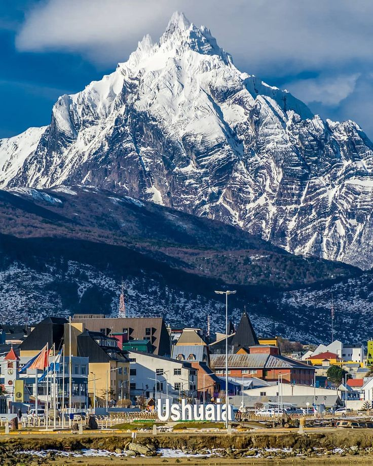
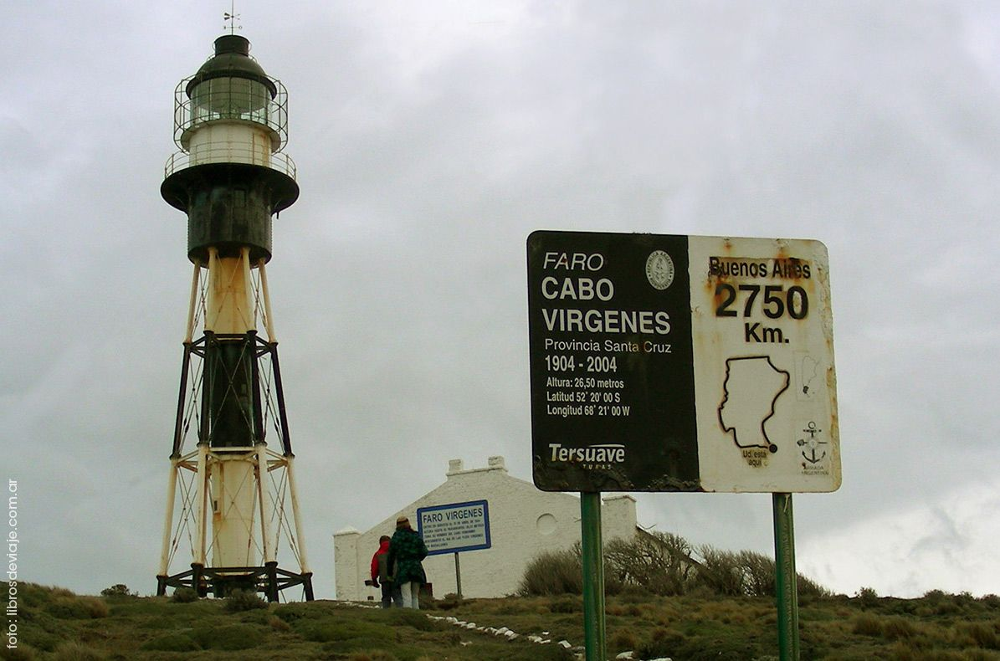
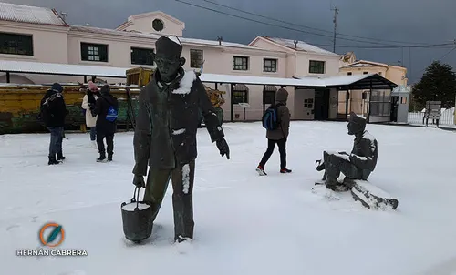
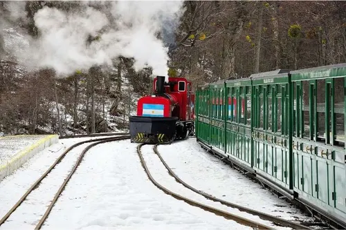
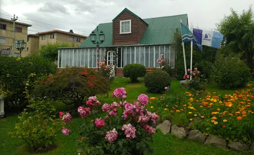

Un recorrido visual, cultural e histórico por las provincias más australes de nuestro país. Haz clic en cualquiera de nuestras tarjetas para explorar la información detallada de cada rincón.
Información General y Geográfica
Santa Cruz: Cuenta con una superficie de más de 243.000 km². Su relieve se compone de mesetas escalonadas que descienden hacia el mar Atlántico y la cordillera de los Andes al oeste. Su clima es frío y seco con fuertes vientos característicos de la estepa patagónica.
Tierra del Fuego, Antártida e Islas del Atlántico Sur: Provincia insular y bicontinental. Presenta un relieve de transición impactante donde la Cordillera de los Andes tuerce su rumbo hacia el este y se hunde en el mar, generando canales, fiordos y bosques subantárticos.
Circuitos y Atractivos Turísticos

Glaciar Perito Moreno (Santa Cruz)
Ubicado dentro del Parque Nacional Los Glaciares. Toca para ver detalles, excursiones e historia.

Ushuaia y Canal Beagle (Tierra del Fuego)
La ciudad más austral del mundo. Toca para ver itinerarios de navegación e historia marítima.

El Chaltén (Santa Cruz)
Capital Nacional del Trekking. Toca para explorar las rutas hacia el monte Fitz Roy.

Parque Nacional Tierra del Fuego
Punto final de la Ruta 3 en Bahía Lapataia. Toca para conocer sus senderos y fauna.

Reserva Cabo Vírgenes (Santa Cruz)
El Km 0 de la Ruta 40 y la gran pingüinera magallánica. Toca para ver más.

Lago Fagnano y Tolhuin (Tierra del Fuego)
El corazón de la Isla Grande de Tierra del Fuego. Toca para conocer sus secretos.
Gastronomía y Rutas Temáticas


Fiestas Patrias y Festivales Regionales

Fiesta de la Noche más Larga
El solsticio de invierno en Ushuaia. Toca para conocer actividades y tradiciones del festival.
Fiesta del Lago Argentino
Celebración estival en El Calafate. Toca para ver detalles de eventos artísticos y náuticos.

Fiesta Nacional de la Cereza
Celebración en Los Antiguos. Toca para ver cómo se vive la cosecha y los festivales de folclore.
Patrimonio Histórico y Museos

Museo del Presidio de Ushuaia
El legendario presidio del fin del mundo. Toca para leer historias de reclusos y pabellones.

Cueva de las Manos
Arte rupestre de 9.000 años de antigüedad. Toca para explorar este Patrimonio Mundial.

Tren del Fin del Mundo
El histórico recorrido de los presos. Toca para conocer la ruta y paisajes del tren de vapor.

Museo de los Pioneros (Río Gallegos)
Las primeras casas y colonos en la estepa. Toca para conocer la historia patagónica.
Ubicación Geográfica
Explora la región austral argentina que abarca las provincias de Santa Cruz y Tierra del Fuego: